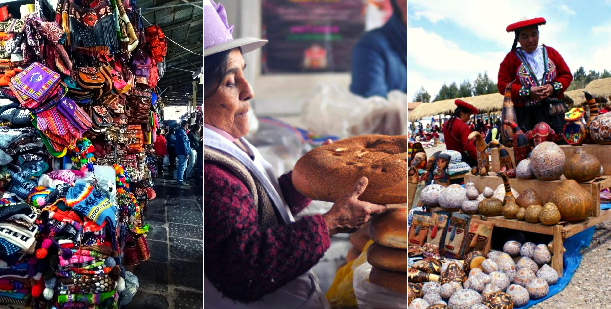
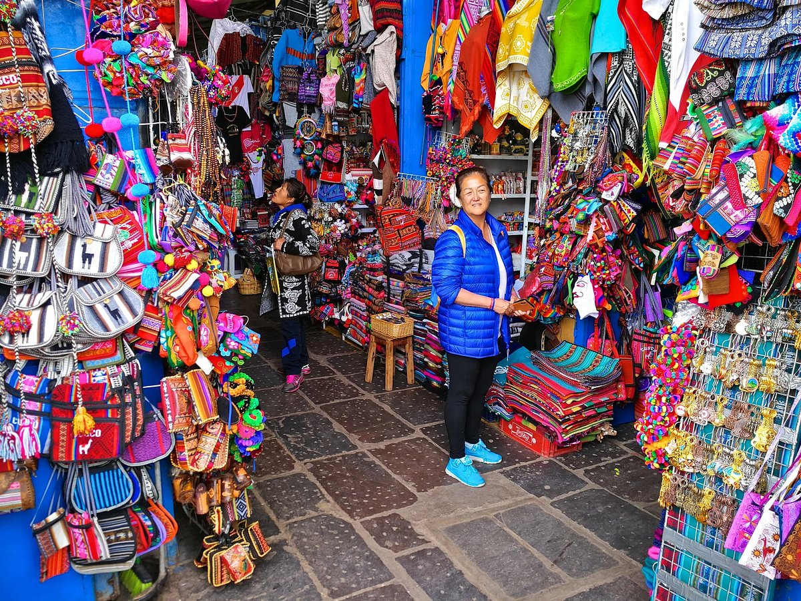
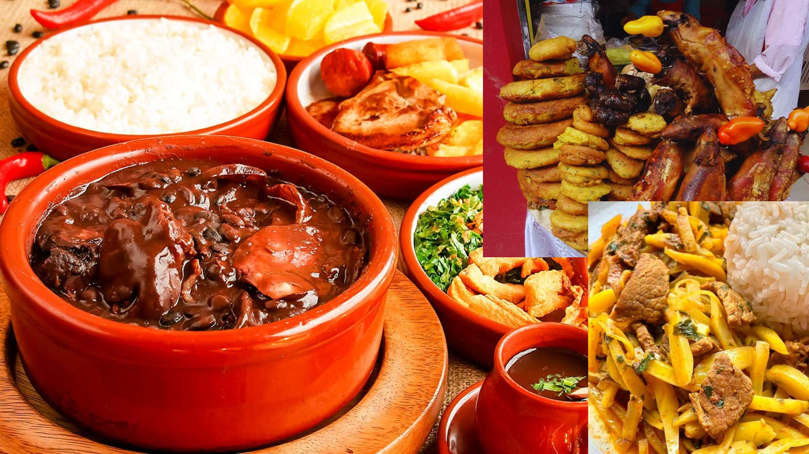
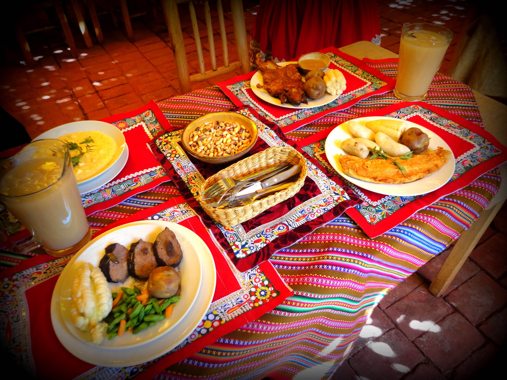
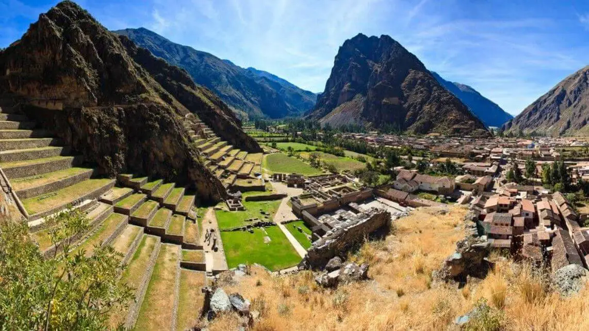
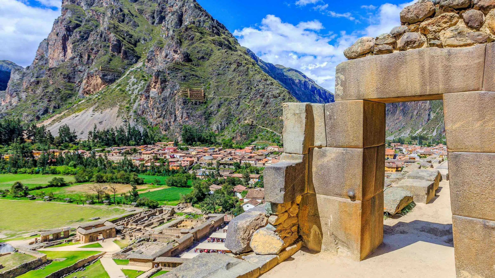
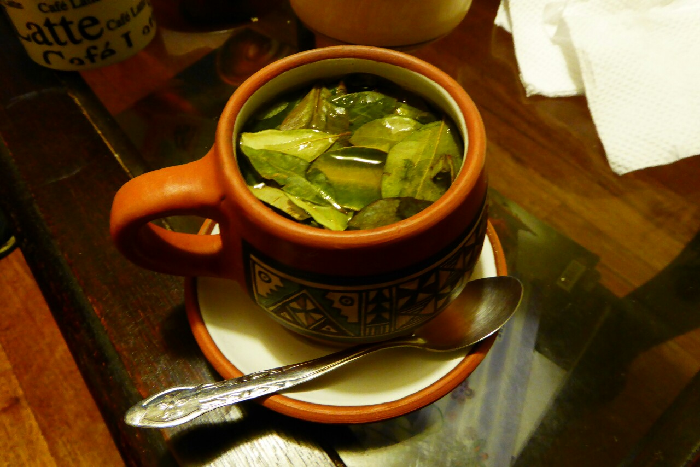

Transporte ida y vuelta desde Hotel Luna creciente
Guía turístico bilingüe (Español/Inglés)
Entradas a parque arqueologico.
Almuerzo en restaurante local Ollantay
Degustación de chancho al palo, Guiso de alpaca, trucha frita, mate de coca
Que llevar:
Ropa cómoda y zapatos adecuados para caminar.
Protector solar, gorra o sombrero.
Entradas a parque arqueologico.
Botella de agua reutilizable.
Cámara o teléfono para fotos.
PRECIO: 500 USD por persona
Itinerario
1. Explorar el Mercado Artesanal
Duracion:2 horas Horario:9:00 AM - 11:00 AM Actividades:
Recorrido por el mercado de frutas con un guía experto
Recorrido por el mercado de recuerdos con un guía experto
Recorrido por el mercado de ropa tradicional con un guía experto
Sesion de fotos con ropa tipica de la zona
tiempo de descanso (15min)




2. Almuerzo tipico
Duracion:1 horas Horario:11:30 AM - 1:00 PM Actividades:
Nos dirijimos al restaurante Ollantay
Tomaremos una foto
Degustaremos de los platos tipicos
tiempo de descanso (15min)
Restaurante: Ollantay
¡Ven y comparte con nosotros un recorrido por los sabores que hacen única a nuestra región!
Calificacion:4 estrellas
Platos famosos de carta
Cuy al horno
Trucha frita
Caldo de llama
Chancho al palo
Guiso de alpaca


3. Entrada al parque arqueologico Ollantaytambo
Duracion:4 horas Duracion de viaje:15 min (no se cuenta de las 4 horas en el parque) Horario:1:00 PM - 5:00 AM Actividades:
Viaje en miniban al parque
Foto en la entrada
Recorrido por el parque arqueologico
Sesion de fotos en el parque
1 hora libres para sus actividades
Especialidades andinas
Ven a Especialidades Andinas y descubre sabores auténticos en un ambiente
tranquilo y acogedor. Perfecto para comenzar el día o cerrar la jornada con un toque de
tradición.
Calificacion: 4 estrellas
Un poco de lo que ofrecemos
Mate de coca
Ponche de kiwuicha
Quinua con Leche
Infusión de Muña
Ponche de kiwuicha
4. Cena tradicional
Duracion:4 horas Duracion de viaje Regreso:15 min (no se cuenta de las 2 horas de cena) Horario:5:30 PM - 9:30 AM Actividades:
Regreso en miniban al pueblito
Nos dirijimos al restaurante Especialidades Andinas
Eleccion de potajes
Degustacion de potajes
vsisitaremos el centro del parque donde habra un espectaculo

Hotel: Luna Creciente
Calificacion: 4 estrellas
Tipo de habitacionmatrimonial, facimilar, simple, vip, doble
Habitaciones desde S/50
Desayuno buffet incluido
5. Noche de locura
Duracion:4 horas Duracion de viaje Regreso:15 min (no se cuenta de las 2 horas de cena) Horario:10:30 PM - 2:30 AM Actividades: